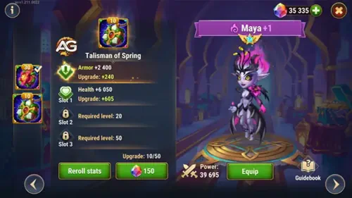
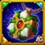

The mystical child of Man and Titan returns stronger than ever! Maya’s connection to nature has flourished, and her once-delicate flowers now carry immense healing power and deadly poison. With her revamped skills, she’s ready to bloom again on the battlefield.
After receiving buffs to several of her skins and preparing for her upcoming Legendary Relic Skills, Maya’s transformation marks a new era for Nature teams in Hero Wars Alliance. Get ready to experience her beautiful, yet dangerous, evolution!
Maya Revamp Guide - Hero Wars Alliance, a game developed by Nexters.
Who Is Maya?
Maya is a middle-line healer who uses the power of enchanted flowers to restore allies and poison her enemies. Her hybrid nature of healing and damage makes her a versatile hero, capable of turning the tide in long battles.
Glyph Class: Healer
Position: Middle line
Main Stat: Intelligence
Faction: Nature
How to get Soul Stones: Heroic Chest, Events
Synergy: Alvanor, Mushy
Hydra Tier List: A
With her revamped skills granting stronger boosts and the upcoming legendary relic abilities on the horizon, Maya is evolving from a support healer into a core powerhouse for Nature teams. Her synergy with Alvanor and Mushy enhances both her healing output and sustained damage.
Whether you’re facing the Hydra, competing in Guild Wars, or climbing the Arena ranks, Maya’s new upgrades make her a radiant force worth investing in. Prepare your garden the goddess of flowers has awakened.
Maya Pros and Cons - Hero Wars Alliance
✅ Pros
Excellent sustain through her Queen of Flowers healing ability, keeping allies alive during long fights.
Strong pure damage from her plants, allowing her to bypass armor and damage even tanky enemies.
Scales well with Magic Attack and Intelligence, making her effective with proper artifact and skin investment.
Provides teamwide healing over time and constant battlefield pressure with summoned plants.
Her skills synergize well in magic-heavy teams and can turn the tide in drawn-out battles.
❌ Cons
Slow damage output at the start of battle—her plants take time to grow and deal consistent damage.
Vulnerable to burst damage and silence effects before her healing and plants activate.
Less effective against armor defense-heavy teams or heroes that cleanse damage over time effects.
Requires good team synergy and support heroes to protect her while her plants build up strength.
Maya Talisman Guide Hero Wars Alliance
Maya’s talismans play a crucial role in shaping her role on the battlefield. Unlike skins that always grant passive bonuses, only one talisman’s effects are active at a time. Choosing the right one can greatly affect her healing strength, poison power, or survivability. Let’s explore both and decide which works best for your team setup.
Talisman of Blooming
This talisman greatly enhances Maya’s offensive and healing power. It increases her Magic Attack through both the main stat and reroll bonuses, improving her Queen of Flowers healing and poison damage from Poisoned Pollen and Poisonous Bonds. The Intelligence stat also provides extra Magic Defense and Physical Attack, though the main benefit is maximizing her skill scaling.
Summary: Ideal for boosting Maya’s healing and poison potency. Recommended for offensive setups and synergy with Alvanor or Mushy & Shroom in Nature teams.
Talisman of Spring
The Talisman of Spring enhances Maya’s defensive role, offering a large boost in Armor and Health. This makes her far more durable but limits her offensive and healing growth. It’s best used in defensive team formations where Maya needs to stay alive longer to sustain allies rather than deal damage.

Talisman of Spring, Hero Wars Alliance.
Table: Maya Talisman of Spring

Talisman of Spring
Main Stat
Armor
+12,000 Armor
Slot 1
Slot 2
Slot 3
Total Reroll Bonus
Health +60,500
Health +60,500
Health +60,500
Health +181,500
Total Stats (Main + Rerolls): Health +181,500
Armor +12,000
Summary: Perfect for defensive teams or tank-heavy setups where Maya needs to endure long battles. However, it offers no improvement to her healing or poison output.
Which Talisman Is Best for Maya?
The Talisman of Blooming is generally the best choice for most situations. Its massive Magic Attack and Intelligence boosts amplify Maya’s healing and poison abilities — the very core of her playstyle.
Use the Talisman of Spring only in battles where survivability is more important than healing throughput, such as fighting burst-heavy teams.
Final Verdict:Talisman of Blooming – ⭐ Best overall for both healing and offensive builds.
Talisman of Spring – 🛡️ Defensive alternative for endurance-focused strategies.
Discover how Maya’s revamped relic skills and buffs transform her into a stronger healer and poison dealer. Learn which abilities to upgrade first!
1st – Queen of Flowers
Maya’s core skill that defines her as both protector and healer. She grows a magical flower around herself, shielding her and restoring health to all allies over time. The flower remains active until destroyed. The healing per second is based on (10% Magic Attack + 3000), and the flower’s durability scales with (135% Magic Attack + 34800).
This skill is her most vital because it provides continuous healing and protection, especially in long battles or against poison-heavy teams.
Skill Info
Formula Health regen per second: (10% Mag.atk. + 3000)
Formula Flower health: (135% Mag.atk. + 34800)
Keywords: Shield
Animation delay: 0.73 seconds
Range: 1000
Queen of Flowers, Hero Wars Alliance.
Evolution Priority:Very High – This skill defines Maya’s role as a top-tier healer and shield provider.
1st – Enhanced Legendary Relic Level 10: Queen of Flowers
When upgraded to its Legendary Relic form, Maya’s flower now enhances the team’s Toughness by (15% Magic Attack + 3000) while it’s active.
Toughness reduces incoming damage when an ally’s health is low, working against all damage types. This makes her shield much more reliable and life-saving, turning Maya into a defensive powerhouse.
Toughness Formula:(Toughness / (Toughness + Enemy’s Main Stat)) × 100%
Relic Unlocks at Level 10 Info
Table: Relic Unlocks at Level 10 Info
Info
Value
Relic Shard Necessary (Level 2–10)
280
Total Relic Shard Necessary (Level 0–10)
330
Total Magic Attack Bonus (Level 0–10)
+11000
Total Health Bonus (Level 0–10)
+56149
Queen of Flowers Legendary, Hero Wars Alliance.
Evolution Priority:High – Strengthens team durability with a powerful Toughness boost.
2nd – Poisoned Pollen
Maya releases a cloud of poisoned pollen that targets the most distant enemy, inflicting pure damage every 6 seconds. The damage formula is (75% Magic Attack + 14400).
This ability is especially effective against backline heroes like healers and mages. It provides consistent pressure and helps whittle down enemies protected by tanks.
Skill Info
Formula Poison deals:(75% Mag.atk. + 14400) pure damage per 6.0 seconds
Cooldown: 12 seconds
Animation delay: 0.61 seconds
Duration: 6 seconds
Poisoned Pollen, Hero Wars Alliance.
Evolution Priority:Medium-High – Reliable pure damage skill that pressures the enemy backline.
3rd – Poisonous Bonds
Summons living vines that drag the far-left and far-right enemies together, entangling and poisoning them for continuous pure damage. The poison deals (50% Magic Attack + 14400) per 6 seconds.
This crowd control is helpful against teams with strong formation spacing or multiple supports, though it’s less impactful in fast-paced battles.
Skill Info
Formula - Poison deals:(50% Mag.atk. + 14400) pure damage per 6.0 seconds
Initial Cooldown: 13 seconds
Cooldown: 20 seconds
Animation delay: 0.8 seconds
Duration: 6 seconds
Area: 180
Poisonous Bonds, Hero Wars Alliance.
Evolution Priority:Medium – Useful for control, but less essential than her main flower skills.
4th – Queen's Revenge
When Maya’s flower is destroyed, its roots lash out, entangling and poisoning nearby enemies. The poison damage formula is (Magic Attack + 52800). This skill offers retaliation damage and crowd control after losing the protective flower.
Skill Info
Formula - Poison damage:(100% Mag.atk. + 52800)
Duration: 8 seconds
Area: 350
Queen's Revenge, Hero Wars Alliance.
Evolution Priority:Medium-High – Great for control and extra damage when the flower is destroyed.
The Legendary Relic form allows Maya’s flower’s roots to entangle and poison enemies not only when destroyed but also when it appears. The poison damage remains (Magic Attack + 52800).
This turns the flower into an offensive and defensive tool, making Maya far deadlier in both PvE and PvP battles.
Relic Unlocks at Level 20 Info
Table: Relic Unlocks at Level 20 Info
Info
Value
Relic Shard Necessary (Level 11–20)
800
Total Relic Shard Necessary (Level 0–20)
1130
Total Magic Attack Bonus (Level 0–20)
+29350
Total Health Bonus (Level 0–20)
+149734
Queen's Revenge Legendary, Hero Wars Alliance.
Evolution Priority:High – Expands her area control and poison spread at both spawn and destruction.
5th – Legendary Relic Level 1: Life Drop
Every 17 seconds, Maya summons a healing bud that restores health to the rightmost ally for 10 seconds, then moves to the weakest ally and continues healing.
The healing formula is (50% Magic Attack) per second. This skill brings continuous healing support and fits well with her theme of regeneration.
Relic Unlocks at Level 1 Info
Table: Relic Unlocks at Level 1 Info
Info
Value
Relic Shard Necessary (Level 0–1)
50
Total Relic Shard Necessary (Level 0–1)
50
Total Magic Attack Bonus (Level 0–1)
+5,645
Total Health Bonus (Level 0–1)
+28,794
Life Drop Legendary, Hero Wars Alliance.
Evolution Priority:High – Excellent consistent healing that enhances survivability in long fights.
6th – Legendary Relic Level 30: Nature's Might
With this relic, Maya’s healing and poison effects now spread to nearby allies and enemies around the main target. This drastically increases her area impact, allowing her to heal multiple teammates and poison grouped foes.
This skill transforms Maya into a team-wide support unit instead of a single-target specialist.
Relic Unlocks at Level 30 Info
Table: Relic Unlocks at Level 30 Info
Info
Value
Relic Shard Necessary (Level 21–30)
1750
Total Relic Shard Necessary (Level 0–30)
2880
Total Magic Attack Bonus (Level 0–30)
+57570
Total Health Bonus (Level 0–30)
+293704
Nature's Might Legendary, Hero Wars Alliance.
Evolution Priority:Very High – Expands Maya’s healing and poison to affect entire groups, making her indispensable.
Best Skin for Maya Hero Wars Alliance
Discover the best skins for Maya in Hero Wars Alliance! Learn which ones boost her healing and damage the most after her powerful revamp, including the new Stellar skins.
Stellar Skin+
Stat Bonus: Crushing +11,840 (Base Stellar Skin: +5,920, doubled when activated)
Evolution Priority:Very High – Crushing is a powerful offensive stat, crucial for the late-game and for applying damage pressure. As the new Stellar skin+, this is a top evolution priority.
Note on Crushing: The bonus is +11,840, obtained by activating the Stellar Skin+ double bonus (5,920 base).
Champion’s Skin
Stat Bonus: Magic Attack +10,687
Evolution Priority:High – Increases the damage of Maya's poison and flower attacks, making her much deadlier after the revamp. Top priority after the Stellar Skin.
Winter Skin
Stat Bonus: Magic Attack +10,665
Evolution Priority:High – A strong offensive skin that perfectly synergizes with her relic and Nature buffs, right behind the Champion's Skin in offensive priority.
Default Skin
Stat Bonus: Intelligence +1,365
Magic Attack from Intelligence: +4,095
Magic Defense from Intelligence: +1,365
Physical Attack from Intelligence: +1,365
Evolution Priority:Medium – A balanced early boost for both healing and offense thanks to the Intelligence stat.
Romantic Skin
Stat Bonus: Health +106,645
Evolution Priority:Medium-Low – Improves survivability for longer battles, but offers no offensive benefit to her healing or poison skills.
Demonic Skin
Stat Bonus: Magic Defense +10,650
Evolution Priority:Low – Adds defense against magic enemies but contributes little to Maya's healing or offensive potential.
Learn which Maya artifacts to prioritize in Hero Wars Alliance! Discover which ones best enhance her healing power and poisonous flower damage after her revamp.
1st - Weapon Artifact: Mother Tree's Branch
Effect: Activates with Maya’s ultimate, providing Magic Defense +32,040 to the entire team for 9 seconds.
Evolution Priority:High – This artifact is essential for team survivability. Since it activates alongside Maya’s ultimate, it protects allies during her healing bursts and poison bloom attacks. Upgrading it increases team-wide durability in both PvE and PvP battles.
2nd - Book Artifact: Tome of Arcane Knowledge
Stats: Magic Attack +10,680 | Health +53,394
Evolution Priority:Medium – The bonus Magic Attack directly boosts the healing and damage from Maya’s poisonous flowers. While useful, it doesn’t provide team-wide defense like her weapon artifact, making it a secondary focus for evolution.
3rd - Ring Artifact
Stats: Intelligence +3,990
Magic Attack from Intelligence: +11,970
Magic Defense from Intelligence: +3,990
Physical Attack from Intelligence: +3,990
Evolution Priority:Low – The Intelligence increase helps all her stats slightly, but the improvement is minor compared to her other artifacts. Upgrade this last, as its effects are passive and don’t directly enhance team performance or her key skills.
Final Priority Order: Weapon Artifact → Book Artifact → Ring Artifact
This priority ensures Maya’s healing remains powerful while keeping her team protected from enemy attacks during intense battles.
Maya Glyph Evolution Priority
Learn which Maya glyphs are most effective to upgrade first in Hero Wars Alliance. Her glyphs improve her poison damage, healing power, and overall survivability — essential for both Arena and Guild War battles.
1st - Magic Attack Glyph
This glyph increases Maya’s overall Magic Attack by +12,850. Since all her healing and poison abilities scale with Magic Attack — such as Queen of Flowers and Poisoned Pollen — this is the most impactful glyph to upgrade first. The higher her Magic Attack, the stronger her healing over time and poison damage become.
Level 80 Stats: +12,850 Magic Attack
Evolution Priority:Very High – Greatly increases both healing and offensive power in every battle.
2nd - Health Glyph
The Health glyph grants +122,800 Health. More Health helps Maya survive longer to sustain her team with healing. It also makes her Queen of Flowers shield last longer, since it depends on Maya’s survival to keep regenerating allies.
Level 80 Stats: +122,800 Health
Evolution Priority:High – Crucial for survivability in both defensive and healing roles.
3rd - Intelligence Glyph
Each point of Intelligence boosts Maya’s main stats: +3 Magic Attack, +1 Magic Defense, and +1 Physical Attack. While the boost to Magic Attack helps her poison and healing output, it scales slower compared to the direct Magic Attack glyph. Still, it’s a valuable upgrade for long-term scaling.
Level 80 Stats: +2,110 Intelligence
Magic Attack from Intelligence: +6,330
Magic Defense from Intelligence: +2,110
Physical Attack from Intelligence: +2,110
Evolution Priority:Medium-High – Improves both offensive and defensive stats but less impactful than pure Magic Attack or Health.
4th - Magic Defense Glyph
Provides +12,850 Magic Defense, reducing damage from enemy mages. It’s particularly useful against heroes like Lars, Krista, or Celeste. However, Maya already offers defensive support through her flower, making this glyph a secondary focus.
Level 80 Stats: +12,850 Magic Defense
Evolution Priority:Medium – Good for magic-heavy matchups but less important overall.
5th - Armor Glyph
Gives +12,850 Armor, protecting against physical attackers. While it improves survivability, it doesn’t enhance any of Maya’s healing or poison-based skills. Since her flower often absorbs damage, this glyph has the least impact on her performance.
Level 80 Stats: +12,850 Armor
Evolution Priority:Low – Useful in rare matchups versus physical teams but should be upgraded last.
Final Priority Order: Magic Attack → Health → Intelligence → Magic Defense → Armor
This order ensures Maya’s poison and healing potential reach their peak while maintaining solid survivability in long fights.
Conclusion – Maya Guide Hero Wars Alliance
Maya stands as one of the most balanced magic heroes in Hero Wars Alliance, offering both consistent healing and reliable pure damage through her summoned plants. She shines in prolonged battles where her Healing can keep allies alive while her plants slowly wear down opponents. When built with the right skins, glyphs, and artifacts, Maya becomes a key support-damage hybrid capable of sustaining the team and applying pressure throughout the fight.
However, Maya requires protection from burst damage and control effects early in combat, making her most effective when paired with heroes who can shield or crowd-control the enemy team. She excels in magic-based teams and synergizes well with heroes that amplify her magic attack or extend fight duration.
In conclusion, Maya is not a top-tier burst mage, but rather a strategic, endurance-focused hero whose strength lies in outlasting and overwhelming opponents over time. Players who invest in her Magic Attack, Intelligence, and survivability will find her to be a dependable and rewarding choice for both campaign and guild battles.
About the Author
Alexandre Domingos holds a postgraduate degree in Engineering and works as a Production Supervisor. In his spare time, he explores the gaming world as a YouTuber and blogger at Alexandre Games, combining his passion for technology and strategy. He has been immersed in gaming since the age of 5, starting on classic platforms like MSX, Master System, Nintendo, and even an old 286 PC. Since 2019, Alexandre has also been playing Hero Wars and Mobile Legends, among other mobile games, creating guides, tutorials, and analyses for the community.
Video suggestion
Video: Maya with Legendary Relics is INSANE! 😱 They heal, protect, and KILL all at the same time?! Hero Wars Alliance🔊 English audio + multi-language subtitles! Discover Maya’s insane new Legendary Relics! 🌺⚔️
Did you enjoy our guide about the revamped Maya in Hero Wars Mobile? Is there something you didn't understand or would like to suggest changes to? We invite you to join our comment section on the Alexandre Games Blog page. Feel free to express your opinion, clarify your doubts, and share your suggestions. Click the button below to get started:


 Folio Relics Guide for Hero Wars Alliance
Folio Relics Guide for Hero Wars Alliance
 Electra Hero Guide for Hero Wars Alliance
Electra Hero Guide for Hero Wars Alliance
 Guus Hero Guide – Healer from the Way of Honor for Hero Wars Alliance
Guus Hero Guide – Healer from the Way of Honor for Hero Wars Alliance
 Jhu Rework Guide – The Unstoppable Warrior of Hero Wars Alliance
Jhu Rework Guide – The Unstoppable Warrior of Hero Wars Alliance